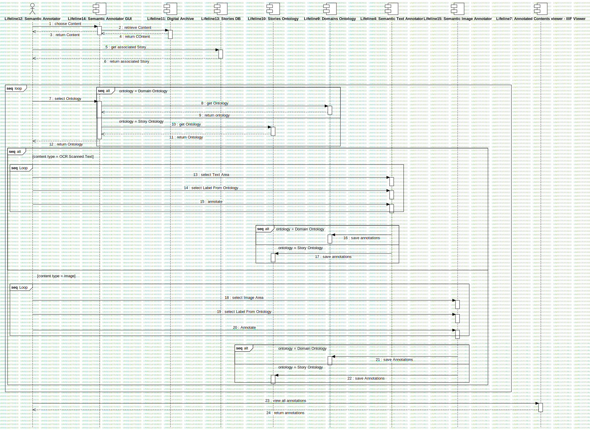

Sequence - Annotation
UMLInteraction
RASTA
::
Requirement Analysis
::
OR3 - Caserta, San Leucio verso Carditello
::
Sequence - Annotation
::
Sequence - Annotation
Description
none
Diagrams

Sequence - Annotation
Fragments
loop
loop
alt
alt
alt
alt
Loop
alt
alt
Loop
alt
alt
Participants
Lifeline1: Stories DB
Lifeline2: Annotator
Lifeline3: Stories DB
Lifeline4: Semantic Text Annotator
Lifeline5: Web Content Retrieval
Lifeline6: Metadata Annotator
Lifeline7: Annotated Contents viewer - IIIF Viewer
Lifeline8: Stories Ontology
Lifeline9: Domains Ontology
Lifeline10: Stories Ontology
Lifeline11: Digital Archive
Lifeline12: Semantic Annotator
Lifeline13: Stories DB
Lifeline14: Semantic Annotator GUI
Lifeline15: Semantic Image Annotator
Messages
choose Content (Lifeline12→Lifeline14)
retrieve Content (Lifeline14→Lifeline11)
return Content (Lifeline14→Lifeline12)
return COntent (Lifeline11→Lifeline14)
get associated Story (Lifeline12→Lifeline13)
return associated Story (Lifeline13→Lifeline12)
select Ontology (Lifeline12→Lifeline14)
get Ontology (Lifeline14→Lifeline9)
return ontology (Lifeline9→Lifeline14)
get Ontology (Lifeline14→Lifeline10)
return Ontology (Lifeline10→Lifeline14)
return Ontology (Lifeline14→Lifeline12)
select Text Area (Lifeline12→Lifeline4)
select Label From Ontology (Lifeline12→Lifeline4)
annotate (Lifeline12→Lifeline4)
save annotations (Lifeline4→Lifeline9)
save annotations (Lifeline4→Lifeline10)
select Image Area (Lifeline12→Lifeline15)
select Label From Ontology (Lifeline12→Lifeline15)
Annotate (Lifeline12→Lifeline15)
save Annotations (Lifeline15→Lifeline9)
save Annotations (Lifeline15→Lifeline10)
view all annotations (Lifeline12→Lifeline7)
return annotations (Lifeline7→Lifeline12)
Message1 (Lifeline12→Lifeline14)
get Associated Story (Lifeline12→Lifeline10)
choose Content (Lifeline2→Lifeline4)
return Content (Lifeline4→Lifeline2)
get Associated Story (Lifeline2→Lifeline10)
return Story (Lifeline10→Lifeline2)
choose Story Ontology (Lifeline4→Lifeline2)
return Story Ontology (Lifeline2→Lifeline4)
Show Annotation GUI (Lifeline4→Lifeline2)
Choose Domain Ontology (Lifeline2→Lifeline4)
return Ontology (Lifeline4→Lifeline2)
show Annotation GUI (Lifeline4→Lifeline2)
select Text Area (Lifeline2→Lifeline4)
select Label From Story-Domain Ontology (Lifeline2→Lifeline4)
annotate (Lifeline2→Lifeline4)
select Image Area (Lifeline2→Lifeline6)
View All Annotations (Lifeline2→Lifeline7)
return Annotations (Lifeline7→Lifeline2)
populate Ontology (Lifeline6→Lifeline5)
save Annotation (Lifeline6→Lifeline5)
Annotate Area (Lifeline2→Lifeline6)
select Metadata (Lifeline2→Lifeline6)
return Metadata Type (Lifeline2→Lifeline6)
choose Metadata Type (Lifeline6→Lifeline2)
return Image (Lifeline2→Lifeline6)
Choose Image (Lifeline6→Lifeline2)
populate Ontology (Lifeline4→Lifeline5)
save Annotation (Lifeline4→Lifeline5)
return story (Lifeline3→Lifeline2)
request Story (Lifeline2→Lifeline3)
Properties
Name
Value
name
Sequence - Annotation
stereotype
null
visibility
public
isReentrant
true
Owned Elements
Sequence - Annotation